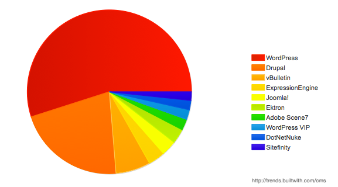

I'm not sure. I'm afraid we need to use ... Math.
/* style.scss */
#navbar {
width: 80%;
height: 23px;
ul { list-style-type: none; }
li {
float: left;
a { font-weight: bold; }
}
}/* compiled style.css */
#navbar {
width: 80%;
height: 23px; }
#navbar ul {
list-style-type: none; }
#navbar li {
float: left; }
#navbar li a {
font-weight: bold; }/* style.scss */
$main-color: #ce4dd6;
$style: solid;
#navbar {
border-bottom: {
color: $main-color;
style: $style;
}
}
a {
color: $main-color;
&:hover { border-bottom: $style 1px; }
}/* compiled style.css */
#navbar {
border-bottom-color: #ce4dd6;
border-bottom-style: solid; }
a {
color: #ce4dd6; }
a:hover {
border-bottom: solid 1px; }/* style.scss */
@mixin rounded-top {
$side: top;
$radius: 10px;
border-#{$side}-radius: $radius;
-moz-border-radius-#{$side}: $radius;
-webkit-border-#{$side}-radius: $radius;
}
#navbar li { @include rounded-top; }
#footer { @include rounded-top; }/* compiled style.css */
#navbar li {
border-top-radius: 10px;
-moz-border-radius-top: 10px;
-webkit-border-top-radius: 10px; }
#footer {
border-top-radius: 10px;
-moz-border-radius-top: 10px;
-webkit-border-top-radius: 10px; }<html> tag tellling you if the browser suppors feature X or not
<html lang="en" dir="ltr" id="modernizrcom" class="js no-touch postmessage history multiplebgs boxshadow opacity cssanimations csscolumns cssgradients csstransforms csstransitions fontface localstorage sessionstorage svg inlinesvg blobbuilder bloburls download formdata wf-proximanova1proximanova2-n4-active wf-proximanova1proximanova2-i4-active wf-proximanova1proximanova2-n7-active wf-proximanova1proximanova2-i7-active wf-proximanovacondensed1proximanovacondensed2-n6-active wf-athelas1athelas2-n4-active wf-active js flexbox flexbox-legacy canvas canvastext webgl no-touch geolocation postmessage websqldatabase indexeddb hashchange history draganddrop websockets rgba hsla multiplebgs backgroundsize borderimage borderradius boxshadow textshadow opacity cssanimations csscolumns cssgradients cssreflections csstransforms csstransforms3d csstransitions fontface generatedcontent video audio localstorage sessionstorage webworkers applicationcache svg inlinesvg smil svgclippaths tk-loaded wf-active">.no-borderradius .box {
/* a bit less padding perhaps? Or some background image? */
}sessionStorage, but if you plug in a sessionStorage polyfill, it'll work without needing to adjust your codeyepnope({
test: Modernizr.geolocation,
yep: 'regular-styles.css',
nope: ['modified-styles.css', 'geolocation-polyfill.js']
});onclick handler
var square = document.getElementById('square');
for (var i = 0; i < 100; i++) {
square.style.left = parseInt(square.style.left) + 1 + 'px';
}setTimeOut() or setInterval()
var square = document.getElementById('square2'),
i = 0;
var move = function() {
square.style.left = parseInt(square.style.left) + 1 + 'px';
if (i++ < 100) setTimeout(move, 1000 / 60);
}
move();
crontabwget or curlcap deploy on your machine, sit back, and enjoy the showThis will make your life easier
The idea behind a framework is to offer a design you can use across multiple applications. All applications have a number of basic things in common. A framework is designed to provide a structure for those common elements (database interaction, presentation layer, application logic) so you spend less time writing up database interface code or presentation-layer interfaces and more time writing the application itself.
from ibm.com
Maybe you can update my website?
A content management system (CMS) allows publishing, editing and modifying content as well as site maintenance from a central page. It provides a collection of procedures used to manage work flow in a collaborative environment.
from wikipedia.org

If you don't like my code, Fork off!
If you're looking for the more honest, truthful answer to pretty much any question on web design and usability, here it is: It depends.